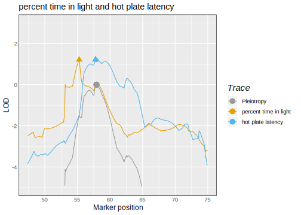
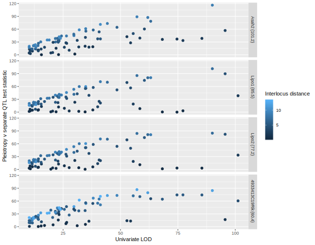

Testing pleiotropy in multiparental populations
Multiparental populations
???
- start with 8 inbred founder lines
- inbred lines are color-coded
- each subject represented by one homologous chromosome pair
- over successive generations of outbreeding, subjects have smaller and smaller contiguous regions from a single inbred line
Background
10,000+ traits with RNA sequencing and mass spectrometry
Quantitative trait locus mapping identifies genetic loci that affect measurable traits
Multiparental populations offer high-resolution QTL mapping
New analysis tools, such as a pleiotropy test for multiparental populations, are needed
???
- Together, high-dimensional traits and multiparental populations can advance complex trait genetics
Benefits of a new pleiotropy test
Insights into genetic architecture
Tool for expression trait hotspot dissection
Complements mediation analysis
???
When trying to identify an intermediate, a pleiotropy test limits the number of mediation analyses by identifying traits that share a QTL
Jiang and Zeng (1995) test
Two-parent crosses
Applies to two traits that co-map
\(H_0\): Pleiotropy
\(H_A\): Two separate QTL
Jiang and Zeng (1995) test
Perform a two-dimensional two-QTL scan
\(vec(Y) = Xvec(B) + vec(E)\)
Calculate likelihood at each ordered pair of positions
Calculate likelihood ratio test statistic
???
Y: 2 traits
X: genotype probs for 2 markers
B: founder allele effects
E: random errors, iid within each phenotype
vec: stack columns
2d scan involves all ordered pairs of markers
Challenges in multiparental populations
- Complex patterns of relatedness
.soln[Multivariate random effects]
- Multiple founder lines
.soln[Fixed effect for each founder allele]
.pull-left[ ]
]
.pull-right[.small[Photo by UNC Computational Genetics]]
???
Two challenges occur at the point of relating phenotypes to genotypes
Test procedure
Perform a two-dimensional two-QTL scan
\(vec(Y) = Xvec(B) + vec(G) + vec(E)\)
Calculate likelihood at each ordered pair of positions
Calculate likelihood ratio test statistic
???
\(G\): Polygenic random effects that depend on the kinship matrix
\(E\): Random errors
Test procedure
Test statistic: \[- \log_{10} \frac{\max (\text{likelihood under pleiotropy})}{\max (\text{likelihood for separate QTL})}\]
Parametric bootstrap to get a \(p\)-value
???
We fit the bivariate QTL models at all points on the two-dimensional grid. With the likelihoods of those model fits, we calculate a likelihood ratio test statistic.
Approximate the null distribution with the distribution of bootstrap test statistics
Application
Logan et al. (2013) and Recla et al. (2014) studied 261 Diversity Outbred mice
Measured about two dozen behavioral traits
Two traits map to Chr 8:
“hot plate latency” (57 cM)
“percent time in light” (55 cM)
???
We applied our test to freely available data from the Chesler laboratory.
Do they share a single QTL?
We examined these two traits because they map to the same region
Hot plate latency is a measure of thermal pain sensitivity
Percent time in light is related to measures of anxiety
Percent time in light

???
- X axis is Chr 8 position
- Y axis is allele effect (on the trait)
- 8 lines per figure: one for each founder line
Hot plate latency

???
- Distinct allele effects patterns suggest separate QTL
LOD definitions
\[LOD(\lambda_1, \lambda_2) = ll_{10}(\lambda_1, \lambda_2) - \max_{\lambda} ll_{10}(\lambda, \lambda)\]
\[\text{profile LOD}_{\text{trait 1}}(\lambda_1) = \max_{\lambda_2}LOD(\lambda_1, \lambda_2)\]
\[LOD_p(\lambda) = ll_{10}(\lambda, \lambda) - \max_{\lambda} ll_{10}(\lambda, \lambda)\]
Profile LOD

???
The x axis is Chr 8 position
The y axis is LOD
There are three “traces”: one for each trait and one for the pleiotropy hypothesis.
The pleiotropy trace derives from the likelihoods for the pleiotropy models (ie, the diagonal on the grid)
The “hot plate latency” profile LOD trace reveals a broad peak from 55 to 65 cM
The “percent time in light” profile LOD trace displays a sharp peak atop a broad region with higher LOD scores.
The triangles correspond to the univariate QTL peak positions, while the circles are the profile LOD peak positions.
The two profile LOD traces achieve the same maximum value, which is the test statistic value.
Test results
\(\log_{10} \Lambda = 1.2\)
\(p = 0.11\) (1000 bootstrap samples)
???
Weak evidence for two separate QTL
One QTL affects “distance traveled in light”
Second QTL affects “hot plate latency”
Data
Keller et al. (2018) measured pancreatic islet gene expression levels in 378 Diversity Outbred mice
80 local expression QTL were identified in a 20-Mb region of Chr 19
- local: expression trait QTL is near gene position
Assume that a local expression QTL affects only one local expression trait
Design
Examine power with known expression trait QTL locations
- Interlocus distance
- Univariate LOD
- Interlocus distance
4 strong, centrally located, local eQTL chosen as “anchor” traits
- Asah2, Lipo1, Lipo2, 4933413C19Rik
Pairwise pleiotropy tests each involving one anchor and one of 79 other traits
Interlocus distance
Interlocus distance
Univariate LOD

Conclusions
- \(\uparrow\) Pleiotropy test statistics
- \(\uparrow\) Interlocus distance
- \(\uparrow\) Univariate LOD
qtl2pleio R package
Functions for \(d\)-variate, \(d\)-QTL scan & profile LOD plots
Uses C++ for matrix calculations (via Rcpp and RcppEigen)
Uses
gemma2R implementation of GEMMA EM algorithm for multivariate random effectsUnit tests, vignettes, and version control
???
unit tests to ensure accurate calculations
vignettes on analyzing a pair of traits & on cluster computing for bootstrap test
Summary
- Background
- Methods
- Applications
- Pleiotropy testing and mediation analysis
- Power in pleiotropy testing
- Microbiome case study
- Pleiotropy testing and mediation analysis
- Software
- Conclusions
References
Jiang, C. and Z. Zeng (1995). “Multiple trait analysis of genetic mapping for quantitative trait loci.” In: Genetics 140.3, pp. 1111-1127.
Keller, M. P., D. M. Gatti, et al. (2018). “Genetic Drivers of Pancreatic Islet Function”. In: Genetics, pp. genetics-300864.
Logan, R. W., R. F. Robledo, et al. (2013). “High-precision genetic mapping of behavioral traits in the diversity outbred mouse population”. In: Genes, Brain and Behavior 12.4, pp. 424-437.